Te Herenga Waka — Victoria University of Wellington · School of Psychological Sciences
NeST
How brains develop, adapt, and recover — across species and across scales.
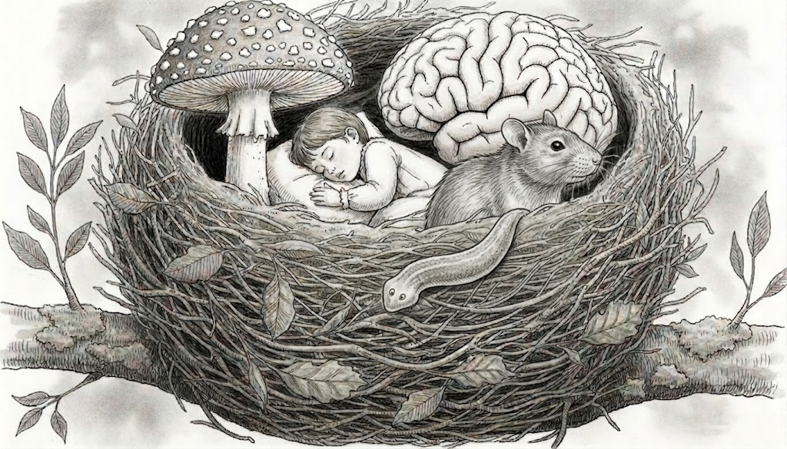
NEST — Neuroplasticity in Environmental and Social Trajectory — is the research group of Bart Ellenbroek and Jiun Youn at the School of Psychological Sciences, Te Herenga Waka—Victoria University of Wellington.
We study the developing and adapting brain from many angles — combining behavioural pharmacology, developmental neuroscience and a healthy appetite for unusual model systems, from planarian flatworms to human volunteers. The thread that ties our work together is plasticity: how nervous systems are shaped by genes, environment and experience, and how they can be nudged toward recovery.
Notices
News from the nest
Recent arrivals, papers, talks and milestones.
-
Alex Lister's PhD thesis approved
Great news from the NEST: Alex's revised PhD thesis has been officially approved. It has been lodged at the library and Alex will graduate in December. You can find her thesis here.
-
Alex Lister PhD defence
We are happy and proud to announce that today Alex successfully defended her PhD thesis. After a few minor changes, we can welcome Dr Lister.
-
The new NEST website is live.
Replace this entry with your latest news — a new publication, a grant, a conference, or a welcome to a new group member. Keeping a few recent items here is the easiest way to make the site feel alive.
Lines of enquiry
Research
Our work runs along several parallel lines, each chosen because it tells us something distinctive about how nervous systems change.
Psychedelic research
We investigate how psychedelic compounds reshape plasticity in animals, and perception and mood in humans through the analysis of first-person accounts.
Planaria plasticity
We use the remarkable regenerative flatworm to ask how memory, learning and drugs form — and even rebuild — the nervous system.
Developmental plasticity
Using available databases such as ABCD, we trace how early environmental factors shape adolescent brains and cognitive development.
AI & the brain
We analyse how the use of generative AI shapes our behaviour and our cognitive and creative processes.
Other research
Side projects, collaborations and the curious questions that don't fit neatly anywhere else.
The group
People
NEST is led by Bart Ellenbroek and Jiun Youn, with a growing group of researchers and students.
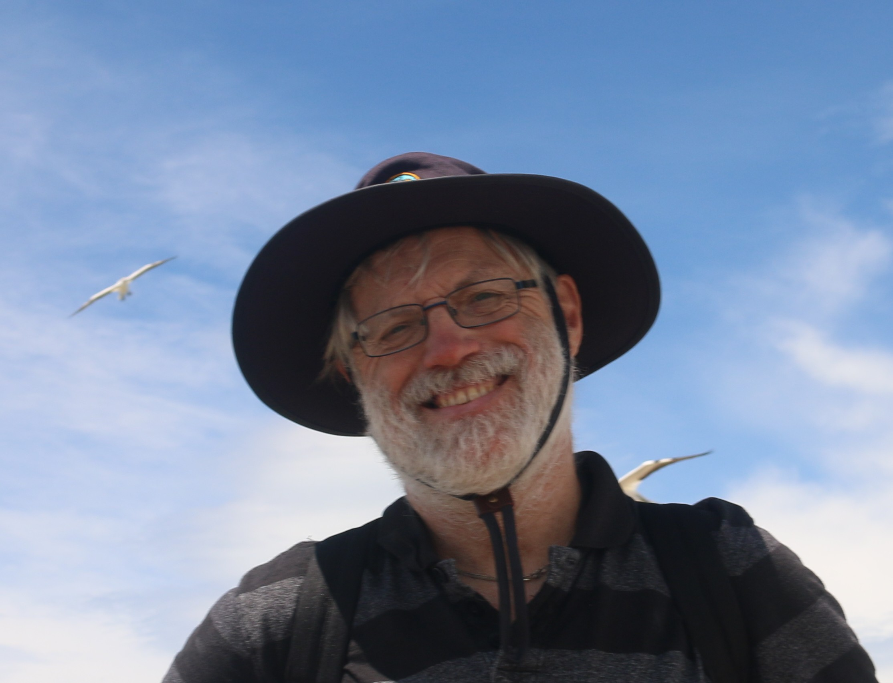
Bart Ellenbroek
Group leader
Read bio →
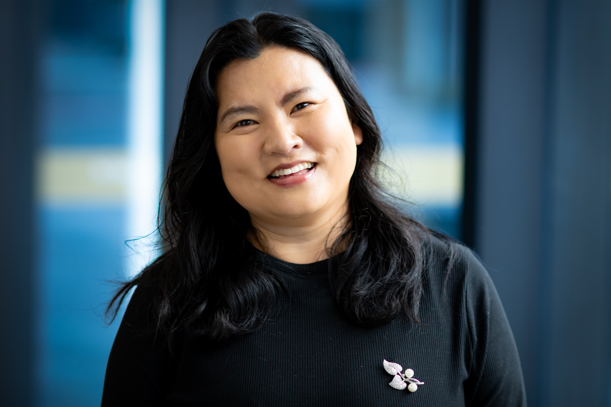
Jiun Youn
Group leader
Read bio →
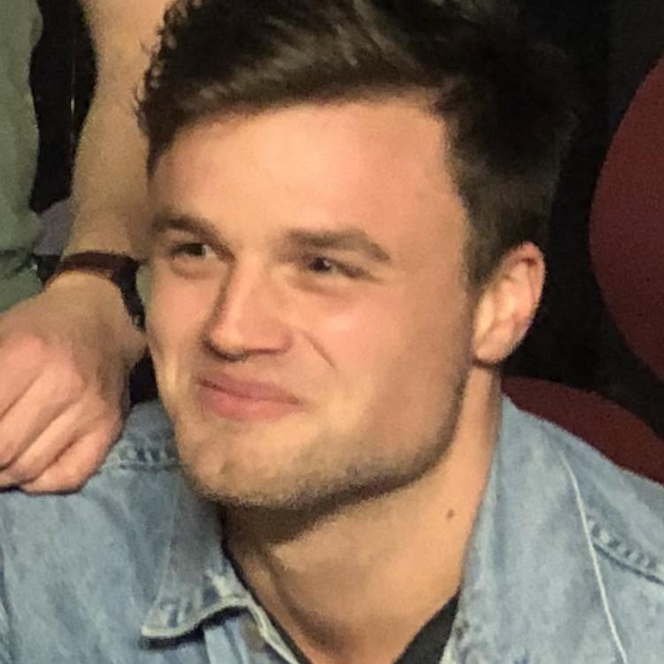
Myles Cubitt
PhD Student
Read bio →
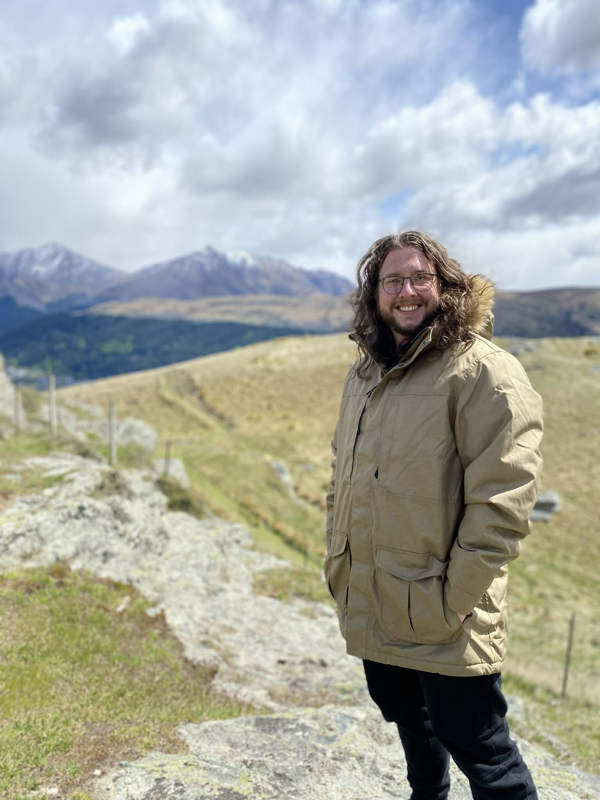
Meyrick Kidwell
PhD Student & Research Assistant
Read bio →
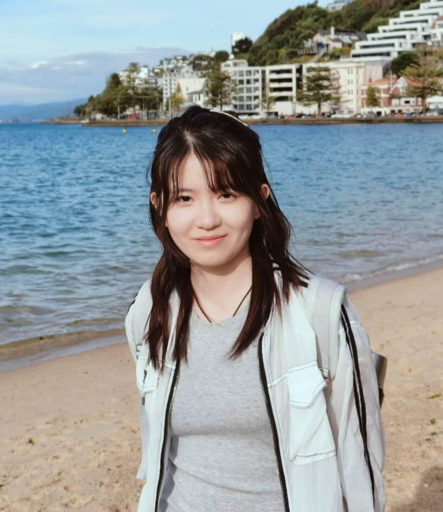
Mengqi Zhang
PhD Student
Read bio →
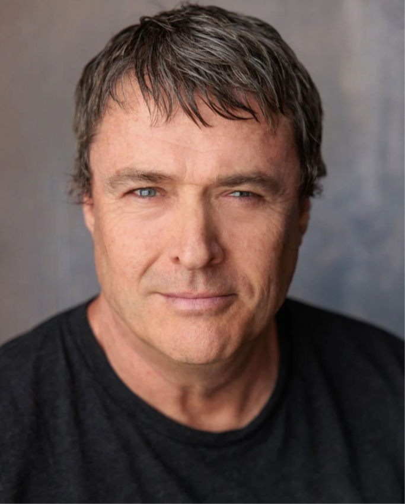
Chris Hobbs
Master Student
Read bio →
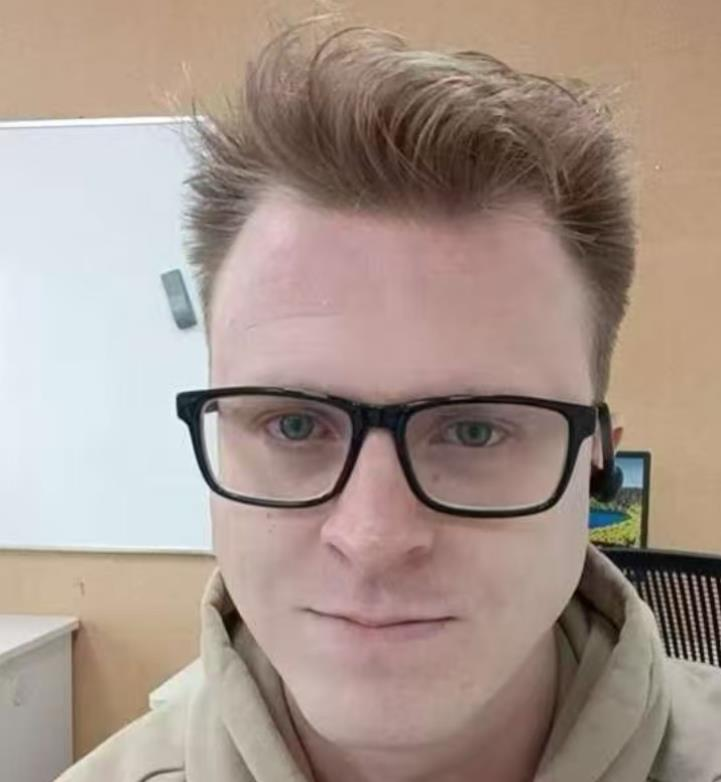
Matt Keay
Master Student
Read bio →
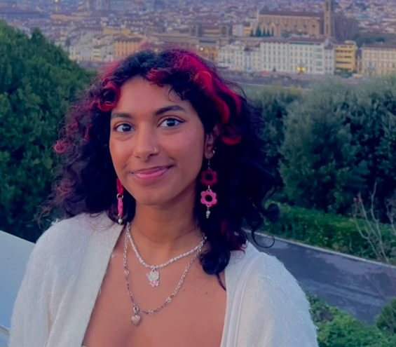
Kavya Thomas
Master Student
Read bio →
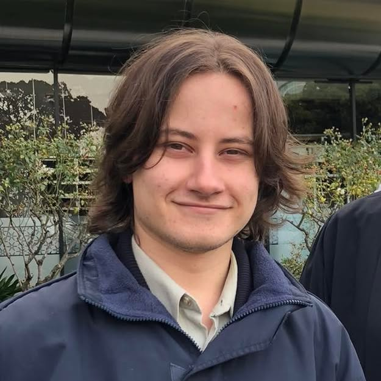
Stefan Trybula
Master Student
Read bio →
Lena Clarke
Honours Student
Read bio →
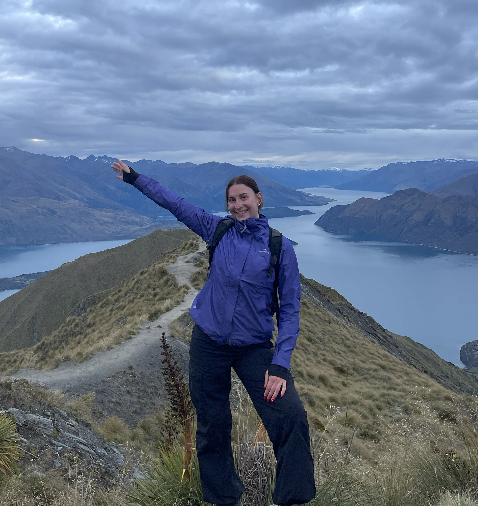
Annie Jencova
Master Student
Read bio →
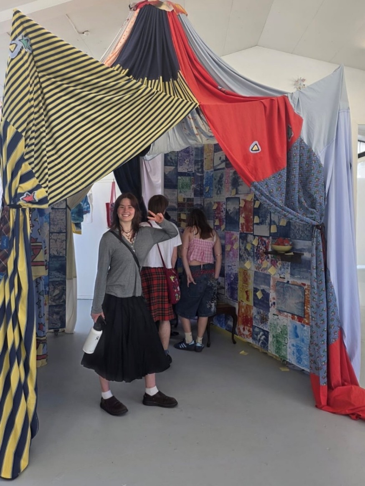
Sasha Middleton
Student Researcher
Read bio →
The record
Publications
Our full and current list of papers lives on Google Scholar, where it updates itself — citations, co-authors and all.
View on Google Scholar →Find us
Contact
Interested in joining, collaborating, or just curious about the work? We'd love to hear from you.
Email the group →